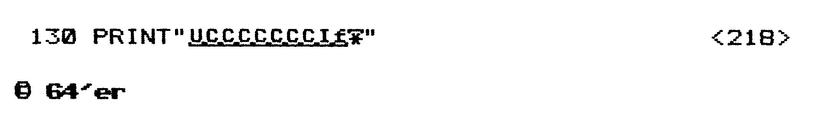
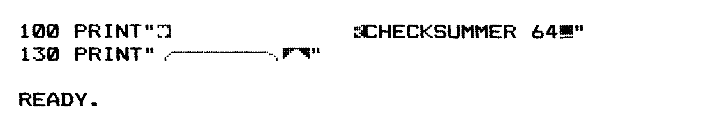

Neuer Checksummer 64 — blitzschnell und kürzer
Der Checksummer überprüft jede eingegebene Basic-Zeile und erspart Ihnen deshalb eine langwierige Fehlersuche. Und neu ist der Checksummer, weil die Initialisierung zirka einhundertmal schneller ist als die alte.
Der Checksummer 64 ist ein kleines Maschinenprogramm, das, wenn es aktiviert ist, Sie sofort davon unterrichtet, ob Sie die jeweilige Programmzeile korrekt eingegeben haben.
- Tippen Sie den Basic-Lader sorgfältig ein. Es gibt zwei Versionen: Eine für den Commodore 64 und eine für den VC 20.
- Bevor Sie »RUN« eingeben, speichern Sie den Basic-Lader bitte erst ab, denn wenn Sie zum Beispiel einen Fehler bei den eingetippten POKE-Anweisungen gemacht haben, ist es möglich, daß der Rechner aussteigt. Heben Sie sich den abgespeicherten Checksummer 64 auf — Sie werden ihn immer wieder brauchen, wenn Sie ein Basic-Programm aus dem 64’er eintippen wollen.
- Nach Initialisierung des Maschinenprogramms ist der Checksummer 64 aktiviert. Er steht innerhalb des Betriebssystems und verbraucht kein einziges Byte Speicherplatz. Es sei hier für Interessierte gesagt, daß selbst alle Sprungvektoren unverändert bleiben, das Programm also mit einer Vielzahl von Programmier-Spracherweiterungen problemlos zusammenarbeitet. Achten Sie aber darauf, daß bestimmte Spracherweiterungen das hinter dem ROM liegende RAM für Hires-Grafiken benutzen. Wird zum Beispiel eine Hires-Grafik von Simons Basic aus angesprochen, so wird der Checksummer 64 zerstört.
- Wenn Sie den Checksummer 64 zwischenzeitlich nicht benutzen, können Sie ihn jederzeit mit »POKE 1, 55« desaktivieren. Auch durch Drücken der Run-Stop- und der Restore-Taste wird der Checksummer 64 desaktiviert. Wollen Sie, daß der Checksummer 64 auch noch nach Drücken dieser Tastenkombination erhalten bleibt, so geben Sie bei aktiviertem Checksummer 64 »POKE64982,53« ein. Der Checksummer 64 ist dann nur durch »POKE1, 55« abschaltbar.
Wollen Sie den Checksummer 64 wieder einschalten, so geben Sie bitte »POKE 1, 53« ein.
Das Maschinenprogramm bleibt solange erhalten, bis der Computer ausgeschaltet, oder wenn von anderen Programmen auf das hinter dem ROM liegende RAM zugegriffen wird. - Eine Checksumme wird nur dann ausgegeben, wenn der Commodore 64 (VC 20) eindeutig erkennt, daß Sie eine Zeile, bestehend aus der Zeilennummer und zumindestens einem alphanumerischen Zeichen, eingegeben haben. Ansonsten reagiert der Commodore 64 normal.
Hinweis: Wenn Sie bei aktivertem Checksummer 64 ein Programm mit »LOAD« in den Speicher holen, wird auch eine Checksumme ausgegeben. Dies liegt jedoch an rechnerinternen Routinen und hat keine weitere Bedeutung, stellt insbesondere keine Gefahr für das geladene Programm dar, da alle Pointer richtig gesetzt werden.
Nach Eingabe von RUN wird zunächst einmal das ROM in das RAM des Commodore 64 verschoben, wonach der Basic-Interpreter modifiziert wird. Dadurch hat man den Vorteil, trotz einer zusätzlichen Routine das gesamte RAM des Rechners zur Verfügung zu haben. Nach ordnungsgemäßem Ablauf des Programms können Sie sofort mit Eingaben beginnen. Für Maschinensprache-Spezialisten: die Einschaltmeldungen des Rechners werden nur nach einem Reset generiert. Der Textbereich, in dem die Meldung steht, wird von dem erzeugten Maschinenprogramm überschrieben.
Alle veröffentlichten Listings sind mit einer Checksumme versehen, dieam Ende jeder Programmzeile steht. Diese Checksumme steht zwischen < und >. Sie wird beim Eintippen des Programms nicht mit eingegeben. Die Zahl zwischen den beiden Zeichen stellt lediglich eine Information für Sie dar. Wenn Sie diese Checksumme dennoch mit eintippen, werden Sie schnell bemerken, daß Sie etwas falsch gemacht haben. Bei aktiviertem Checksummer 64 wird nämlich nach Eingabe einer Basic-Zeile, die mit Return beendet wird, in die linke obere Bildschirmecke die Checksumme eingeblendet, die mit der Summe aus dem veröffentlichten Listing übereinstimmen muß. Ist das nicht der Fall, haben Sie die Zeile anders eingegeben, als sie im Listing dargestellt ist. Vergessen Sie also bitte nicht, daß die am Ende einer Zeile zwischen < und > stehende Prüfsumme nicht mit eingegeben werden darf.
Der Checksummer 64 ist so ausgelegt, daß er abhängig von der Zeilennummer und dem Text der Zeile eine Checksumme ausgibt. Beim Bilden dieser Checksumme werden Spaces (Leertaste) überlesen, was für Sie bedeutet, daß es egal ist, wieviel Leerzeichen Sie zwischen den Worten lassen, da sie für den Programmablauf ohnehin keine Bedeutung haben. Aber manchmal ist das richtige Setzen von Leerzeichen doch wichtig, besonders innerhalb von Strings (Zeichenketten), die gedruckt werden sollen. Seien Sie deshalb besonders genau bei Leerzeichen, die innerhalb von Anführungszeichen stehen, denn meistens ermöglichen nur die richtig gesetzten Spaces eine sinnvolle Textausgabe auf dem Bildschirm.
Beachten Sie auch, daß es durchaus erlaubt ist, Abkürzungen für die Commodore-Befehlswörter zu verwenden. So führt die Eingabe von »?« als Kurzschreibweise für »PRINT« nicht etwa zu einem Checksummen-Fehler, sondern wird korrekt verarbeitet und dementsprechend die Checksumme generiert. Zahlendreher werden allerdings nicht erkannt. Eine 320 in der DATA-Zeile ergibt also dieselbe Prüfsumme wie 230! Nachdem Sie ein Listing eingegeben haben, sollten Sie es aus Sicherheitsgründen vor dem Starten abspeichern. Sie brauchen hierfür jedoch nicht den Checksummer 64 zu desaktivieren.
Wichtiger Hinweis für alle Listings in unseren Heften!
Um Ihnen die Eingabe unserer Listings zu erleichtern, gibt es weder Steuerzeichen noch andere Grafikzeichen. 8ie werden ersetzt durch Klartext. In der Tabelle finden Sie die Erklärung der übersetzten Steuerzeichen.
Beispiel 1:
In einem Listing sehen Sie folgende Zeile:

Dann dürfen Sie weder die geschweiften Klammern eintippen (es gibt sie eh nicht auf der Tastatur) und auch nicht die Wörter CLEAR, 13SPACE, RVSON oder RVOFF, sondern Sie müssen die diesen Wörtern zugeordneten Tasten drücken. In der Tabelle sehen Sie zum Beispiel für
CLEAR = Shift-Taste und 2. Taste ganz rechts oben.
Gemeint ist also, daß Sie anstelle des Wortes CLEAR die Taste CLR/HOME drücken müssen, gefolgtvon 13maligem Betätigen der Leertaste (13SPACE) und so weiter. Auf Ihrem Bildschirm erscheint dann als erstes ein revers dargestelltes Herz. Entsprechendes gilt für alle anderen Wörter innerhalb der geschweiften Klammern.
Beispiel 2:
In manchen Listings tauchen ganz seltsame unterstrichene und manchmal auch überstrichene Zeichen auf, zum Beispiel:
Das unterstrichene U bedeutet, daß Sie die Shift-Taste und die Taste U drücken müssen.
Der überstrichene Stern bedeutet, daß Sie die Commodore-Taste und die Taste mit dem Stern drücken müssen. Das Zeichen davor ist nicht etwa ein unterstrichenes kleines f, sondern ein unterstrichenes Pfund-Zeichen (Sie drücken deshalb die Shift-Taste und die 3. Taste oben rechts).
Also, unterstrichen bedeutet Shift-Taste und den entsprechenden Buchstaben (oder Zeichen), überstrichen bedeutet die Commodore-Taste und den entsprechenden Buchstaben (oder Zeichen). Auf dem Bildschirm sollten Sie dann natürlich die zugehörigen Grafik-Zeichen sehen.
Die beiden Programm-Zeilen von oben sehen später (auf dem Drucker oder ähnlich auf dem Bildschirm) so aus:
Checksummer VC 20
Der Checksummer VC 20 ist im Prinzip genauso aufgebaut wie der Checksummer 64. Da beim VC 20 jedoch nicht die Möglichkeit besteht, das ROM softwaremäßig zu modifizieren, mußte ein anderer Weg als beim Commodore 64 gewählt werden, um die Checksumme zu generieren.
In Ihrer Funktionsweise unterscheiden sich der Checksummer VC 20 und der Checksummer 64 nicht. Es gelten folgende Sonderregelungen bei der Benutzung des Checksummer VC 20:
- Da der Basic-Bereich nicht belegt werden soll, ist das Programm im Kassettenpuffer abgelegt.
- Angeschaltet wird der Checksummer VC 20 mit »SYS 955«.
- Abschaltung des Checksummer VC 20 wird mit »SYS 58459« vollzogen.
Achtung: Nehmen Sie keine Kassetten-Operationen vor, wenn der Checksummer VC 20 eingeschaltet ist. Da das Betriebssystem den Kassettenpuffer mit Daten belegt, kann der Checksummer VC 20 überschrieben werden, was zur Folge hat, daß sich der Computer bei aktiviertem Checksummer VC 20 »aufhängt«. Wollen Sie deshalb ein Programm auf (von) Kassette abspeichern (laden), so müssen Sie erst den Checksummer VC 20 abschalten (SYS 58459).
Daraufhin kann der Kassettenpuffer mit Daten überschrieben werden, ohne daß der Computer »aussteigt«.
Als Sicherung wird bei der Initialisierung geprüft, ob das zuletzt angesprochene Peripherie-Gerät der Kassettenrecorder war. Ist das der Fall, so werden die Betriebssystemroutinen LOAD und SAVE für die Benutzung gesperrt. Der Rechner meldet bei Aufruf einer dieser beiden Routinen READY, ohne weitere Aktionen durchzuführen. Diese Sicherung kann man nach der Tipparbeit aufheben, wenn man den Checksummer VC 20 mit SYS 58459 abschaltet. Dadurch wird der Kassettenpuffer für andere Daten freigemacht. Weiterhin wird dann durch gleichzeitiges Drücken der Tasten »Run-Stop & Restore« erreicht, daß die Betriebssystemroutinen LOAD und SAVE wieder eingerichtet werden.
- Bei Benutzung einer Diskettenstation brauchen Sie nicht darauf zu achten, daß bei LOAD beziehungsweise SAVE der Checksummer VC 20 überschrieben wird, da der Kassettenpuffer für die Diskettenstation normalerweise nicht genutzt wird. Deshalb können Sie die beiden Routinen weiterhin normal nutzen, sofern der Rechner bei der Initialisierung des Checksummer VC 20 feststellt, daß das zuletzt angesprochene Peripherie-Gerät nicht der Kassettenrecorder war.
- Bedingt durch den anderen Aufbau des Checksummer VC 20 wird anders als beim Checksummer 64 nach der LOAD-Routine keine Checksumme ausgegeben.
- Wird eine Zeile gelöscht, also eine Zahl zwischen 0 und 65999 eingegeben, und danach Return gedrückt, so wird eine Checksumme ausgegeben, die aber keine Bedeutung hat.
Sie können die Programme auch weiterhin ohne den Checksummer eintippen.
(F. Lonczewski/gk)| CTRL steht für Control-Taste, so bedeutet [CTRL-A], daß Sie die Control-Taste und die Taste »A« drücken müssen. Im folgenden steht: | |
| [DOWN] | Taste neben rechtem Shift, Cursor unten |
| [UP] | Shift-Taste & Taste neben rechtem Shift, Cursor hoch |
| [CLEAR] | Shift-Taste & 2. Taste ganz rechts oben |
| [INST] | Shift-Taste & Taste ganz rechts oben |
| [HOME] | 2. Taste von ganz rechts oben |
| [DEL] | Taste ganz rechts oben |
| [RIGHT] | Taste ganz rechts unten |
| [LEFT] | Shift-Taste & Taste unten rechts |
| [SPACE] | Leertaste |
| [F1] | grauer Tastenblock rechts |
| [F3] | grauer Tastenblock rechts |
| [F5] | grauer Tastenblock rechts |
| [F7] | grauer Tastenblock rechts |
| [F2] | grauer Tastenblock rechts & Shift |
| [F4] | grauer Tastenblock rechts & Shift |
| [F6] | grauer Tastenblock rechts & Shift |
| [F8] | grauer Tastenblock rechts & Shift |
| [RETURN] | Shift-Taste & Return |
| [BLACK] | Control-Taste & 1 |
| [WHITE] | Control-Taste & 2 |
| [RED] | Control-Taste & 3 |
| [CYAN] | Control-Taste & 4 |
| [PURPLE] | Control-Taste & 5 |
| [GREEN] | Control-Taste & 6 |
| [BLUE] | Control-Taste & 7 |
| [YELLOW] | Control-Taste & 8 |
| [RVSON] | Control-Taste & 9 |
| [RVOFF] | Control-Taste & 0 |
| [ORANGE] | Commodore-Taste & 1 |
| [BROWN] | Commodore-Taste & 2 |
| [LIG.RED] | Commodore-Taste & 3 |
| [GREY 1] | Commodore-Taste & 4 |
| [GREY 2] | Commodore-Taste & 5 |
| [LIG.GREEN] | Commodore-Taste & 6 |
| [LIG.BLUE] | Commodore-Taste & 7 |
| [GREY 3] | Commodore-Taste & 8 |
| Wenn Sie sich erst einmal an die in Klartext geschriebenen Steuerzeichen gewöhnt haben, werden Sie den Vorteil dieser Schreibweise erkennen. Der zu dem jeweiligen Steuerzeichen gehörende Klartext ist so verfaßt, daß Sie leicht die Taste beziehungsweise die Tastenkombination finden, die Sie drücken müssen. | |